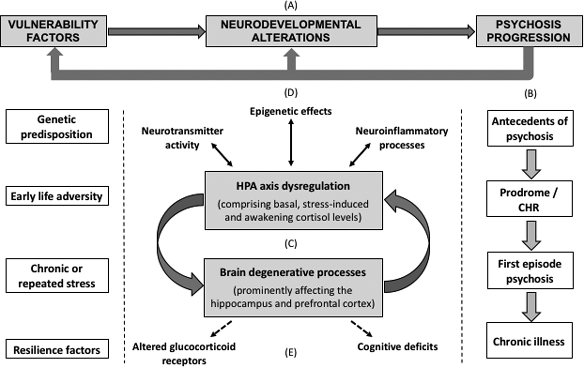

Psychosis & Schizophrenia
Seminar for Lyra Health · June 2025
PD Dr. med. Veith Weilnhammer Helen Wills Neuroscience Institute & Berkeley Artificial Intelligence Research Center University of California Berkeley

What comes to mind when you hear the word psychosis?

The geometry of mental health

Mrs. X

Mrs. X


It started with strange noises through the wall, quiet and barely recognizable, as if someone were eavesdropping.
Over time, I could make out the voice of my neighbor. I had to investigate.
At first, I only heard his voice in my apartment, but later he followed me to other places.
Then it dawned on me - he's an agent!
Dr. Y
Clinical representations

Clinical representations

Diagnosis

Heterogeneity

Lost in translation


Found in translation

Mission of Lyra Health: To make high-quality mental health care available to all.
Agenda
An overview on psychosis
Real-world Case studies and reflections
Agenda
An overview on psychosis
What are psychotic experiences?
Epidemiology & course
Causes & risk factors
Assessment & flags
Communication strategies
Evidenced-based treatment
Real-world Case studies and reflections
Agenda
An overview on psychosis
Real-world Case studies and reflections
The Suspicious Neighbor: Emerging paranoia and early intervention
Voices on the Line: Acute psychosis during a crisis call
The Impostor Family: Delusional misidentification and trauma
The Silent Withdrawal: Subtle onset in a high-functioning individual
What are you most curious about?
An overview on psychosis
What are psychotic experiences?

It started with strange noises through the wall, quiet and barely recognizable, as if someone were eavesdropping.
Over time, I could make out the voice of my neighbor. I had to investigate.
At first, I only heard his voice in my apartment, but later he followed me to other places.
Then it dawned on me - he's an agent!


General Definition
Psychotic experiences refer to disruptions in the way a person perceives, interprets, or connects with reality.
They include alterations in perception (e.g. hearing voices), thought content (e.g. delusions), speech, and behavior.
They reflect a breakdown of reality monitoring—the ability to distinguish internal experiences from external events.
Common Phenomena
Hallucinations: Perceptual experiences without external stimuli (e.g. voices, visions)
Delusions: Fixed, false beliefs (e.g. paranoia, grandiosity)
Disorganized Speech: Tangential, incoherent, or illogical language
Thought Insertion: Belief that thoughts are being placed in one's mind
Passivity Experiences: Feeling controlled by external forces
Psychotic disorders
Schizophrenia Spectrum Disorders
Brief Psychotic Disorder
Schizoaffective Disorder
Bipolar Disorder (with psychotic features)
Major Depression (with psychotic features)
Delusional Disorder
Substance- or Medication-Induced Psychotic Disorder
DSM-5 Criteria for Schizophrenia
Criterion A – Core Symptoms:
- Two or more of the following, present for ≥1 month. At least one must be (1), (2), or (3):
- (1-3) Delusions, Hallucinations, Disorganized speech
- (4-5) Disorganized/catatonic behavior, negative symptoms
Criterion B – Functional Impairment: Work, relationships, or self-care markedly below prior functioning
Criterion C – Duration: Continuous signs of disturbance for ≥6 months, including ≥1 month of active symptoms
Criterion D – Mood Exclusion: Schizoaffective disorder and mood disorders with psychotic features must be ruled out
Criterion E – Substance/Medical Exclusion
Criterion F – Neurodevelopmental Exclusion: In ASD or communication disorders, schizophrenia is diagnosed only if delusions or hallucinations are prominent and persist for ≥1 month
Specifiers: Include course (e.g. first episode, remission), severity, and catatonia
ICD-10 vs ICD-11 Criteria for Schizophrenia
Core Symptoms:
- Both require ≥1 first-rank or equivalent symptoms (e.g., thought insertion, delusional perception)
Duration: Psychotic symptoms must persist for ≥1 month in both systems
Functionality:
- ICD-10: Does not require functional impairment
- ICD-11: Still does not require it, but impairment may support diagnosis
Subtypes:
- ICD-10 includes subtypes (e.g., paranoid, hebephrenic, catatonic)
- ICD-11 removes subtypes entirely
Symptom Specifiers: (ICD-11 only)
- Positive symptoms, Negative symptoms
- Depressive, Manic, Psychomotor, Cognitive
Course Specifiers:
- ICD-10: episodic/continuous/remission patterns
- ICD-11: structured specifiers (e.g., first episode in remission, multiple episodes in acute phase)
Psychosis (Syndrome)
- Definition: A state in which a person loses contact with reality.
- Can occur in:
- Schizophrenia, Bipolar Disorder, Depression etc.
- Substance use (e.g. stimulants, cannabis)
- Medical conditions (epilepsy, NMDAR encephalitis etc.)
- Symptoms:
- Hallucinations (most often auditory)
- Delusions (often paranoid or grandiose)
- Disorganized thoughts or behavior
- Agitation or confusion
- Duration: Can be brief or prolonged
- Course: May resolve fully or recur
Schizophrenia (Diagnosis)
- Definition: A chronic mental illness involving disruptions in thought, perception, and affect.
- Core Features:
- Delusions
- Hallucinations
- Disorganized speech
- Negative symptoms (e.g. flat affect, social withdrawal)
- Catatonic behavior
- Diagnostic Criteria (DSM-5):
- ≥2 core symptoms, one must be delusions, hallucinations, or disorganized speech
- Present for ≥1 month, with total illness duration ≥6 months
- Marked social or occupational dysfunction
- Course: Episodic or continuous; often lifelong support needed
Summary: What is Psychosis?
Altered connection to reality, across multiple diagnostic groups
Core features: hallucinations, delusions, disorganization, and loss of insight
DSM-5, ICD-10, and ICD-11 converge on symptom patterns, but differ in structure
Course and Epidemiology
How common are psychotic experiences?
When do they start?
What happens after diagnosis?
Early: It began slowly. I was 19. First, I couldn’t sleep. Then I felt like people on the bus were talking about me.
By 21, I had dropped out of university. I thought my professors were recording my thoughts.
They took me to the hospital after I stood outside in the rain all night, convinced the sky was trying to send me messages.
In treatment: After the hospital, things got quiet. Too quiet. My family said I was better, but I did not feel very much.
I started antipsychotics, moved back in with my mother, and stopped speaking much. I had trouble concentrating, and was sleepy most of the time. I lost my phone three times in a month!
Long-term course: Years have passed. I have some good days. I volunteer now and then. But the world still feels distant, like it’s behind glass.
Global & Demographic
Prevalence: Schizophrenia affects about 1 in 200 people globally (~0.5%).
Incidence is slightly higher in urban vs. rural areas, and among migrants and vulnerable populations.
Men are affected earlier (late teens to early 20s), women typically later (late 20s to early 30s).
Global & Demographic
Typical Trajectory
Prodromal Phase: Often includes social withdrawal, reduced motivation, subtle emotional or cognitive changes.
First Episode: Characterized by acute psychosis, usually requiring hospitalization.
Afterward: Symptom course varies: may remit, recur, or become chronic depending on factors like support, early intervention, and adherence.
Typical Trajectory

Heterogeneity and Hope
~ 20% of individuals recover fully with treatment and support
~ 40% experience intermittent relapses with significant periods of stability
~ 40% have chronic symptoms, often dominated by negative or cognitive deficits
Factors predicting better outcome: female sex, later onset, short duration of untreated psychosis, good premorbid functioning, and social support
Early intervention services significantly improve outcomes
Summary: Course & Epidemiology
Schizophrenia affects ~0.5% of the population — more than many chronic neurological illnesses
Typical onset is in late adolescence or early adulthood, earlier in men than women
Course varies: some recover fully, others experience relapses or chronic symptoms
Early signs include subtle cognitive and social changes (prodrome), followed by acute psychosis
Prognosis improves with early intervention, support, and treatment adherence
Causes & Risk Factors
What contributes to psychosis?
Mrs. X was always a sensitive child—quiet, withdrawn, lost in thought.
In adolescence, she struggled with anxiety and feelings of detachment.
After a stressful breakup and increased cannabis use, the voices began.
She later learned that her uncle had been hospitalized with similar symptoms.
Vulnerability & Triggers
Genetic predisposition: Family history increases risk
Early adversity: Trauma, neglect, or abuse during childhood
Substance use: Especially cannabis, amphetamines, psychedelics
Stress & life events: Breakups, migration, academic stress
Neurodevelopmental factors: Complications during birth or development
Vulnerability & Triggers

How causes interact
Diathesis-Stress Model: Psychosis emerges when vulnerability meets stress
Cognitive Model: Maladaptive interpretations of internal experiences
Neurodevelopmental Model: Early brain insults predispose to later symptoms
Biopsychosocial Integration: No single cause—multiple levels interact
How causes interact
Summary: Causes & Risks
Genetic risk, early trauma, and drug use can all increase the likelihood of psychosis.
Stress and misinterpretation of internal signals may act as triggers.
Modern theories emphasize interactions across biology, psychology, and context.
If you could reduce one societal risk factor for psychosis, what would it be?
Assessment & Flags
How do we detect emerging psychosis?
What signs should raise concern?
What does good assessment look like?
Mrs. X had recently returned to work after being absent for a few months. At first, she was quiet in meetings. Then she began skipping them altogether.
When a colleague called, she whispered that the office phones were tapped. She said "they know everything I think."
She agreed to an assessment only after her partner noticed she hadn't eaten in two days and was afraid to leave the house.
Flags
Unusual suspiciousness, perceptual changes, or fixed odd beliefs
Sudden social withdrawal, functional decline, or flat affect
Disorganized speech, derailment, or illogical thoughts
Reports of "mind reading," "being watched," or "hearing things"
Family/friend concern without clear explanation
Best Practices
Start with a collaborative, stigma-free interview
Include direct but gentle questions about unusual beliefs and perceptions
Assess insight, reality testing, affect, and coherence of thought
Consider structured tools (e.g., BPRS, PANSS, CAPS, PDI, SAPS, SANS, etc.) in at-risk cases
Always ask about suicidality, substance use, and recent stressors
Precision Mental Health
Uses digital pre-screening to flag potential early psychosis risk
Incorporates AI-informed triage and structured intake interviews
Focus on fast access to care, including therapist-matching
Follows up on flags with specialized evaluation (telehealth or in-person)
Care pathways may include CBTp, medication consults, and family support
Summary: Assessment & Red Flags
Early signs often subtle — include withdrawal, odd beliefs, or perceptual shifts
Good assessment includes empathy, structured inquiry, and risk screening
Digital tools can augment human judgment and improve access
What are your challenges in working with people who experience psychosis? What has helped?
Communication Strategies
How to engage effectively
Mrs. X described a moment when her reflection no longer felt like her own.
She feared that something had taken over her body, and even her voice seemed unfamiliar.
The therapist’s calm response didn’t make the fear vanish — but it prevented things from escalating.
In that moment, what helped was not reassurance, but simply being seen without alarm.
Principles of Engagement
Core Strategies
Establish Safety: Maintain a calm tone and open posture. Avoid sudden movements or challenges.
Validate the Experience: You don’t have to agree with the belief, but you can acknowledge the emotional impact.
Stay Curious: Ask open-ended questions to explore the meaning and context of the experience.
Limit Confrontation: Challenging delusional content directly may increase defensiveness or distress.
Respect Autonomy: Emphasize collaboration and choice wherever possible.
Digital Format
Digital Care Strategies
Start with rapport: In both messaging and video sessions, tone and empathy matter deeply. Use the person's name and reflect their language.
Assess stability early: Is the person grounded in reality? Are they experiencing perceptual distortions or paranoia?
Use simple, direct language: Avoid metaphors or abstract explanations in early phases. Clarity reduces uncertainty.
Offer structure: Provide predictable session formats, summaries, and check-ins to reduce fear and disorientation.
Document concerns: Clearly note flags like disorganized speech, flat affect, or delusional themes while maintaining trust.
Summary: Communicating in Psychosis
Effective communication is calm, validating, and non-confrontational.
Explore experiences gently without confirming or denying their reality.
Digital settings require even more attention to tone, structure, and safety cues.
Treatment Approaches
Evidence-based, person-centered, and sustainable care
Mrs. X was brought to urgent care by her sister after weeks of increasing isolation and disorganized behavior.
She believed her neighbors were sending her coded messages and hadn’t slept in days.
She received antipsychotic medication, but treatment didn’t stop there.
A coordinated team helped her rebuild routines, process trauma, and gradually reconnect with others.
Multimodal Care
Key Treatment Domains
Medication: Antipsychotics reduce acute symptoms. Careful titration and shared decisions matter for adherence.
Psychoeducation: Empowering patients and families with knowledge improves engagement and reduces stigma.
CBTp: Helps process distressing beliefs without invalidation. Evidence-based and effective in reducing relapse.
Family Work: Reduces expressed emotion, improves coping, and strengthens support networks.
Supported Employment & Housing: Restores identity and purpose — foundational to long-term recovery.
Recovery Framework
Recovery is More Than Symptom Control
Hope and empowerment: A belief in recovery and personal growth is central to treatment culture.
Shared decision-making: Patients define goals, preferences, and acceptable risks.
Integrated care: Address comorbidities, substance use, and unmet social needs holistically.
Digital tools: When used thoughtfully, apps and messaging platforms can support continuity, symptom tracking, and reminders.
After discharge, Mrs. X had trouble managing her appointments, prescriptions, and daily structure.
Her GP was unsure how to support her and hadn’t received the discharge summary.
A case manager reconnected the dots — coordinating care, checking in regularly, and involving her family doctor in the plan.
This continuity prevented relapse and supported her reintegration into daily life.
Transitions
From Crisis to Community
Early planning: Begin discharge planning from day one, involving patient, family, and outpatient teams.
Bridging the gap: Provide follow-up appointments and low-threshold check-ins. Consider home visits or digital touchpoints.
Clear communication: GPs and social workers need timely, comprehensible discharge summaries.
Relapse prevention: Develop individualized crisis plans and involve the full support network.
Integrated Networks
Sustainable Multidisciplinary Care
Psychiatric support: Continue monitoring, med adjustments, and therapeutic engagement.
Primary care: Address comorbidities, monitor metabolic effects, and serve as accessible anchor point.
Case management: Ensure coordination, advocate for housing, benefits, and daily structure.
Peer support: Lived experience provides hope and authentic connection that complements clinical care.
Summary: Treating and Sustaining Recovery
Evidence-based care includes medication, therapy, family work, and psychosocial support.
Recovery is supported through continuity, collaboration, and person-centered planning.
Integration across services — psychiatry, primary care, digital tools — is key to long-term outcomes.
Real-world case studies and reflections
The Suspicious Neighbor: Emerging paranoia and early intervention
Voices on the Line: Acute psychosis during a crisis call
The Impostor Family: Delusional misidentification and trauma
The Silent Withdrawal: Subtle onset in a high-functioning individual
A., 21, recently moved into a student dorm. He started noticing whispers through the walls at night.
He believed the neighbor had installed listening devices and was trying to provoke him.
Though still attending university, he became preoccupied and distrustful. Early intervention helped prevent further deterioration.
L., 34, called a crisis hotline, reporting that government officials were broadcasting her thoughts via the radio.
She was terrified and disoriented, unable to distinguish internal thoughts from external voices.
This was her first psychotic break, precipitated by recent job loss, isolation, and sleep deprivation.
T., 28, became convinced that his parents had been replaced by identical impostors.
He described emotional disconnection and a strong sense of unreality at home.
A deeper trauma history surfaced later in therapy, suggesting that delusional misidentification masked unresolved emotional wounds.
 The Silent Withdrawal
The Silent Withdrawal
F., 25, an accomplished student, began missing deadlines and isolating socially.
She stopped returning calls, often sitting silently for hours, lost in thought.
Only months later did she reveal she had been hearing voices criticizing her actions and doubting her own thoughts.
Thanks for your attention!